금속재료산업기사 (2008-09-07 기출문제)
1과목: 금속재료
1. 금속변태 중 동소변태에 대한 설명으로 틀린 것은?
- 자성변화가 생긴다.
- 격자배열의 변화가 생긴다.
- A3, A4 변태를 동소변태라 한다.
- 일정온도에서 불연속적인 성질변화를 일으킨다.
(정답률: 88%)

2. 황동을 냉간가공하여 재결정온도 이하의 저온도로 풀림하면 가공상태보다도 오히려 경화하는데 이러한 현상을 무엇이라 하는가?
- 풀림 질별
- 저온 풀림경화
- 재결정 경화
- 재가공 경화
(정답률: 82%)
3. 상온에서 Mg, Zn, Ti 등의 금속이 갖는 결정 격자는?
- 정방격자
- 체심입방격자
- 면심입방격자
- 조밀육방격자
(정답률: 84%)
4. 서밋(Cermet)재료의 용도로 관련이 가장 적은 것은?
- 밸브의 너트
- 절삭용 공구
- 내열재료
- 착암기의 드릴끝
(정답률: 50%)
5. 초소성 재료의 성형기술 중 SPF/DB 방법을 옳게 설명한 것은?
- 판상의 알루미늄 및 티타늄계 초소성 재료를 가스압력으로 형상을 양각, 음각화하는 가스 성형법이다.
- 재료를 오목한 형상의 틀에 단조법으로 밀어넣어 양각화하는 것과 유사한 초성형 기술ㅇ다.
- 가스압력으로 성형 후 고체상태에서 용접하고 확산 접합하는 초성형 기술이다.
- 용해된 금속을 제트형식으로 급회전하는 롤러나 냉금에 분사시켜 리본형태로 제조되는 성형법이다.
(정답률: 50%)
6. 자동차부품, 시계부품 등에 사용되는 쾌삭강에서 절삭성을 높이기 위해 첨가하는 원소가 아닌 것은?
- S
- Pb
- Sn
- Ca
(정답률: 44%)
7. α+β 형의 강력 티탄합금으로 압연성, 단조성, 성형성, 용접성, 고온특성 및 저온특성이 우수하여 항공기 기체나 엔진부품용으로 많이 쓰이고 있는 합금의 조성은?
- Ti-5%Au-2%Sn 합금
- Ti-15%Au-5%Sn 합금
- Ti-6%Au-4%Sn 합금
- Ti-2%Au-5%Sn 합금
(정답률: 49%)
8. 용해시에 흡수한 산소를 인(P)으로 탈산하여 산소를 0.01%이하로 한 것으로 고온에서 수소취성이 없고 산소를 흡수하지 않으며 용접성이 좋은 것은?
- 전기동
- 정련동
- 무산소동
- 탈산동
(정답률: 52%)
9. Fe-C 상태도에서 강과 주철을 분류하는 탄소량의 함유량은 약 몇 %정도인가?
- 0.0025
- 0.8
- 2.0
- 4.3
(정답률: 80%)
10. 다음 중 일반적으로 합금이 순금속보다 좋은 성질은?
- 전성
- 연성
- 전기 전도율
- 강도 및 경도
(정답률: 91%)
11. 구조용 Ni-Cr 강의 뜨임 취성을 방지하는 원소는?
- Cu
- Mo
- Si
- V
(정답률: 95%)
12. 다음 중 분말야금법에 대한 설명으로 틀린 것은?
- 저융점 합금의 제조에 주로 사용한다.
- 공공(空孔)이 분산된 재료의 제조가 가능하다.
- 성분비의 정확성과 균일성을 유지할 수 있다.
- 2개 이상 금속 또는 비금속 혼합 제품을 제조할 수 있다.
(정답률: 67%)
13. 인발가공(drawing)에 대한 설명으로 옳은 것은?
- 판재를 펀치와 다이(die)사이에 압축하여 성형하는 방법이다.
- 소재를 다이(die)의 구멍을 통하여 압출하여 성형하는 방법이다.
- 테이퍼를 가진 다이(die)를 통과시켜 재료를 잡아 당겨서 성형하는 방법이다.
- 회전하는 룰사이에 금속재료의 소재를 통과시켜 성형하는 방법이다.
(정답률: 82%)
14. Ni46%-Fe의 합금으로 열팽창계수 및 내식성에 있어서 백금의 대용이 되며 전구봉입선 등에 사용되는 것은?
- 문쯔메탈(Muntz natal)
- 모넬메탈(Monel natal)
- 콘스탄탄(Constantan)
- 플래티나이트(Platinite)
(정답률: 79%)
15. 해드필드(hadifield)강에 대한 설명으로 옳은 것은?
- 마텐자이트계 강이다.
- 가공경화성이 없다.
- 팽창계수가 작아 열변형을 일으키지 않는다.
- 열처리 후 서냉하면 결정립계에 M3C가 석출하여 취약해진다.
(정답률: 57%)
16. 알루미늄 제품을 2%수산용액에서 직류, 교류 혹은 직류에 교류를 동시에 송전한 것을 통하여 표면에 단단하고 치밀한 산화막을 얻는 방식법은?
- 전류법
- 수산법
- 황산법
- 염산법
(정답률: 64%)
17. 전열(戰熱)합금의 특징에 대한 설명으로 틀린 것은?
- 재질이나 치수의 균일성이 좋을 것
- 열팽창계수가 작고, 고온감도가 클 것
- 전기저항이 낮고, 저항의 온도계수가 클 것
- 고온의 대기 중에서 산화에 견디고 사용온도가 높을 것
(정답률: 94%)
18. 0.2%C를 함유한 강은 상온에서 초석 페라이트를 약 몇 %함유하고 있는가? (단, 공석점의 탄소 고용량은 0.80%이다.)
- 45
- 55
- 65
- 75
(정답률: 62%)
19. 다음 중 비정질합금의 제조법이 아닌 것은?
- 화학도금법
- 금속가스의 종착법
- 화염경화 가공법
- 금속액체의 액체급냉법
(정답률: 63%)
20. 다음 중 비중이 가장 큰 금속은?
- Ti
- Pt
- Cu
- Mg
(정답률: 65%)
2과목: 금속조직
21. 다음의 3원 공정형 상태도에서 Ⅱ영역의 자유도는? (단, Ⅰ영역은 융액, Ⅱ 영역은 고체+융액, Ⅲ 영역은 고체이다.)
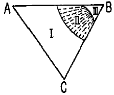
- 0
- 1
- 2
- 3
(정답률: 67%)
22. 브라베이스(Bravais)의 공간격자 모형에서 입방정계의 격자 상수 a, b, c와 촉각 α, β, γ의 관계를 옳게 나타낸 것은?
- a≠b≠c, α≠β≠γ=90°
- a=b≠c, α=β=γ=90°
- a=b=c, α=β≠γ=90°
- a=b=c, α=β=γ=90°
(정답률: 80%)
23. 한 개의 슬립면에서 1원자간 거리만큼 떨어진 평행한 바로 옆의 슬립면에 이동하므로서 생기는 계단을 무엇이라 하는가?
- 조그(Jog)
- 크리프(Creep)
- 전위(Dislocation)
- 버거스 벡터(Burgers vector)
(정답률: 69%)
24. 체심입방격자(BCC)의 슬립면과 슬립방향은?
- {110}, ＜111＞
- {111}, ＜110＞
- {100}, ＜110＞
- {111}, ＜111＞
(정답률: 89%)
25. 치환형고용체를 만들 때에는 두 원자의 크기 차이는 어느정도이어야 하는가?
- 15% 이내
- 30% 이내
- 45% 이내
- 50% 이내
(정답률: 80%)
26. 금속에 있어서 확산을 나타내는 Fick의 제1법칙의 식으로 옳은 것은? (단, J는 농도구배, D는 확산계수, c는 농도, x는 위치(거리)이고, 농도의 시간적 변화는 고려하지 않는다.)
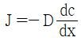
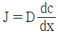
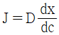
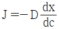
(정답률: 83%)
27. 다음 3성분계 상태도에서 X점이 표시하는 합금의 A성분을 나타내는 것은?
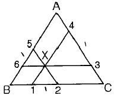
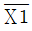
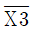
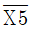
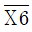
(정답률: 67%)
28. α=Fe 의 자기변태점이며, 가열 및 냉각시 768℃에서 일어나는 변태는?
- A0변태
- A1변태
- A2변태
- A3변태
(정답률: 83%)
29. 결합력에 의한 결정을 분류하고자 할 때 다음 중 원자의 결합양식이 아닌 것은?
- 이온결합
- 톰슨결합
- 공유결합
- 반델발스결합
(정답률: 86%)
30. 소성변형된 금속의 회복(recovery)에서 축적에너지에 대한 설명으로 옳은 것은?
- 결정입도가 감소함에 따라 축적에너지의 양은 감소한다.
- 불순물 원자를 첨가할수록 축적에너지의 양은 감소한다.
- 가공도가 크고, 변형이 복잡할수록 축적에너지는 증가한다.
- 낮은 가공온도에서의 변형은 축적에너지의 양을 감소시킨다.
(정답률: 67%)
31. 철에서 C, N, H, B의 원자가 이동하는 확산기구는?
- 격자간 원자 기구
- 공격지점 기구
- 직접교환 기구
- 링 기구
(정답률: 89%)
32. 다음 중 재결정(Recrystallization)이 일어났을 때의 변화로 옳은 것은?
- 인장강도가 급격히 증가한다.
- 탄성강도가 급격히 증가한다.
- 연신율이 급격히 감소한다.
- 전기저항이 급격히 감소한다.
(정답률: 37%)
33. 다음 중 규칙격자에 대한 설명으로 틀린 것은?
- 규칙ㆍ불규칙 변태를 한다.
- 일반 고용체보다 전기저항이 크다.
- 동족원소끼리도 결합하여 형성된다.
- 성분금속과 동일하며, 소성 변형이 가능하다.
(정답률: 52%)
34. 다음 중 냉간가공과 열간가공을 구분하는 온도는?
- 재결정 온도
- 마무리 온도
- 베이나이트 변태 온도
- 오스테나이트 변태 온도
(정답률: 84%)
35. 다음 결정면의 면지수(밀러지수)는?
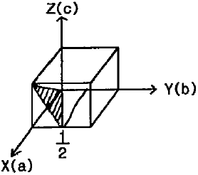
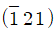
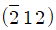
- (0 2 1)
- (0 1 2)
(정답률: 55%)
36. 다음 미끄럼(slip)에 대한 설명으로 틀린 것은?
- 슬립계가 많은 금속일수록 소성변형하기 쉽다.
- 면심입방계와 체심입방계에서는 변형대를 관찰할 수 없다.
- 6방정 금속에서 볼 수 있는 특정적인 변형에는 킹크밴드(kinkband)가 있다.
- 단결정의 방향에 따라 슬립면은 달라도 슬립방향이 공통인 경우를 크로스 슬립(cross slip)이라 한다.
(정답률: 60%)
37. 강의 마텐자이트 변태에 대한 설명으로 틀린 것은?
- 마텐자이트 결정 내에는 격자 결함이 존재한다.
- 원자확산에 의해 오스테나이트에서 동소변태하여 생긴 단일상이다.
- 마텐자이트 변태를 하고 나면 표면기복이 생긴다.
- 오스테나이트와 마텐자이트사이에는 일정한 방위관계가 성립한다.
(정답률: 67%)
38. 면심입방격자(FCC)의 귀속원자 수는 몇 개인가?
- 1
- 2
- 3
- 4
(정답률: 88%)
39. 물질 중에서 원자가 열적으로 활성화되어 이동하게 되는 현상을 확산이하 하며, 이 때 관여하는 원자의 종류에 따라 확산을 분류하고 있다. 단일금속 내에서 동일 원자사이에 일어나는 확산의 명칭은?
- 반응확산
- 입계확산
- 상호확산
- 자기확산
(정답률: 85%)
40. 심하게 냉간 가공된 금속결정 전위밀도는 약 얼마인가?
- 108~108/cm2
- 108~109/cm2
- 1011~1012/cm2
- 1014~1015/cm2
(정답률: 77%)
3과목: 금속열처리
41. 0.45% 탄소를 함유한 대형제품의 강을 노말라이징(Norma-izing) 처리하였을 때의 표준상태의 조직은?
- 펄라이트와 시멘타이트
- 페라이트와 펄라이트
- 레데뷰라이트와 시멘타이트
- 오스테나이트와 위드만스테텐
(정답률: 83%)
42. 로의 온도 제어 장치에서 온-오프의 시간비를 편차에 비례하도록 하여 온도를 제어하는 온도제어 장치는?
- 온-오프식 온도제어 장치
- 비례 제어식 온도제어 장치
- 정치 제어식 온도제어 장치
- 프로그램 제어식 온도제어 장치
(정답률: 63%)
43. 다음 중 탈탄의 방지대책으로 틀린 것은?
- 강의 표면에 도금을 한다.
- 중성분말제 속에서 가열한다.
- 분위기 가스에서 가열한다.
- 고온에서 장시간 가열한다.
(정답률: 92%)
44. 주조용 Al합금(α-실루민)의 질별 기호 중 T6로 표현되는 열처리 방법은?
- 가공경화 후 도장 처리한 것
- 용체화처리 후 자연 시효 경화 처리한 것
- 용체화처리 후 인공 시효 경화 처리한 것
- 고온 가공에서 냉각 후 인공 시효 경화 처리한 것
(정답률: 82%)
45. 다음 중 일반적인 염욕의 구비조건에 대한 설명으로 옳은 것은?
- 정성이 커야 한다.
- 염욕의 순도가 낮아야 한다.
- 증발, 휘발성이 적어야 한다.
- 흡수성, 조해성(潮解性)이 있어야 한다.
(정답률: 76%)
46. 오스테나이트화 한 후 250~450℃의 적당한 온도로 용융 염욕 등에 퀜칭하고 염욕 중에서 2~3시간 유지한 다음 공랭하여 베이나이트 조직을 얻는 열처리 방법은?
- 마퀜칭
- 마템퍼링
- 오스포밍
- 오스템퍼링
(정답률: 74%)
47. 담금질용 냉각 장치에서 교반 장치가 부착되어 있는 주된 이유로 옳은 것은?
- 제품의 냉각 속도를 빨리하기 위해
- 제품의 변형을 방지하기 위해
- 제품의 표면 탈탄을 방지하기 위해
- 제품의 열처리 응력을 줄이기 위해
(정답률: 74%)
48. 중탄소강을 오스테나이트 상태로 만든 후 가열온도 400~520℃의 용융 염욕 또는 Pb용 중에 침적한 후 공랭시켜 소르바이트 조직으로 되 ㄴ피아노선 등의 신선(wire draw-ing) 작업의 전처리 등에 이용되는 열처리는?
- 패턴팅(partenting)
- 퀜칭(quenching)
- 수인법(water toughening)
- 어닐링(annealing)
(정답률: 72%)
49. 다음 중 심냉처리에 따른 균열의 원인으로 틀린 것은?
- 담금질 온도가 너무 높았을 때
- 강재의 다듬질 정도가 미려한 상태일 때
- 담금질을 행한 강재에 탈탄층이 존재할 때
- 심냉처리 온도가 불균일하거나 정확하지 않았을 때
(정답률: 70%)
50. 강에서 발생하는 고온취성의 원이 되는 원소는?
- Mn
- Si
- P
- S
(정답률: 84%)
51. 침탄 온도 927℃ 로 저탄소강에 4시간 침탄할 때 생성되는 침탄층의 깊이(mm)는? (간. 927℃일 때 확산 정수 값은 0.635이며, Harris의 방정식을 이용한다.
- 1.27
- 3.27
- 5.27
- 7.27
(정답률: 30%)
52. 다음 중 열기전력을 이용하여 측정하는 온도계는?
- 복사온도계
- 광전 온도계
- 열전쌍 온도계
- 전기 저항 온도계
(정답률: 67%)
53. 알루미늄 합금의 강도를 증가시키기 위한 열처리 3단계 과정의 순서로 옳은 것은?
- 용체화처리 - 급랭 처리 - 시효 처리
- 급랭 처리 - 용체화처리 - 안정화 처리
- 서냉 처리 - 용체화처리 - 시효 처리
- 안정화 처리 - 시효 처리 - 서냉 처리
(정답률: 82%)
54. 일반적인 열처리의 목적을 설명한 것 중 틀린 것은?
- 경도 또는 인장력을 증가시키기 위한 것이다.
- 냉간가공에 의해서 생긴 응력을 제거하는 것이다.
- 조직을 최대한 조대화시키고, 방향성을 크게 갖게 하기 위한 것이다.
- 조직을 연한 것으로 변화시키거나 또는 기계 가공을 좋게 하기 위한 것이다.
(정답률: 66%)
55. 냉각제의 냉각속도에 대한 설명으로 옳은 것은?
- 점도가 높을수록 냉각속도가 빠르다.
- 열전도도가 클수록 냉각속도가 빠르다.
- 휘발성이 높을수록 냉각속도가 빠르다.
- 기화열이 낮고 끓는점이 낮을수록 냉각속도가 빠르다.
(정답률: 73%)
56. 기계구조용 탄소강 중 SM45C의 퀜칭에 오스테나이징 온도로 옳은 것은?
- 550~650℃
- 700~800℃
- 620~890℃
- 950~1⑤0℃
(정답률: 48%)
57. 구조용 합금강(SNC236)에서 고온 템퍼링한 후 급냉하는 방법을 채택하는 가장 큰 이유로 옳은 것은?
- 부식 방지를 하기 위해서
- 경도를 향상시키기 위해서
- 고온 뜨임취성을 방지하기 위해서
- 합금탄화물 석출효과를 높이기 위해서
(정답률: 50%)
58. 다음 중 흑연의 형상이 없는 주철은?
- 회주철
- 백주철
- 가단주철
- 구상흑연주철
(정답률: 63%)
59. 강올 오스테나이트 상태로부터 A1 변태점 이하의 일정 온도 중에서 담금질한 그대로 염욕 중에 유지했을 때 나타나는 변태는?
- 자기변태
- 항온변태
- 지체변태
- 고온변태
(정답률: 67%)
60. 가열된 기판 위에 입히고자 하는 피막의 성분을 포함한 원료의 혼합 가스를 접촉시켜 기상반응에 의하여 표면에 금속, 탄화물, 질화물, 붕화물, 산화물 등 다양한 피막생성시키는 방법을 무엇이라 하는가?
- 화학 증착법
- 물리 증착법
- 염욕 코팅법
- 전해 및 방전처리법
(정답률: 79%)
4과목: 재료시험
61. 상대적으로 경한 입자나 미세돌기와의 접촉에 의해 표면으로부터 마모입자가 이탈되는 현상으로 마모면에 긁힘자국이나 끝이 파인 홈들이 나타나게 되는 마모는?
- 응착마모(adhesive wear)
- 피로마모(fatigue wear)
- 연삭마모(abrasive wear)
- 부식마모(corrosion wear)
(정답률: 81%)
62. 금속조직에서 상(Phase)의 양을 측정하는 방법이 아닌 것은?
- 점 측정법
- 직선 측정법
- 면적 측정법
- 체적 측정법
(정답률: 84%)
63. 자동화재탐지설비에 해당되지 않는 것은?
- 수신기
- 발신기
- 감지기
- 분사헤드
(정답률: 81%)
64. 광학 현미경을 통하여 금속조직을 관찰하려고 할 때 시편의 준비 순서로 옳은 것은?
- 시험편 채취→마운팅→연마→폴리싱→부식
- 마운팅→시험편 채취→연마→풀리싱→부식
- 시험편 채취→마운팅→폴리싱→부식→연마
- 시험편 채취→마운팅→부식→연마→폴리싱
(정답률: 85%)
65. 초음파탐상시험에서 표면으로부터 1 파장 깊이 정도의 매우 얇은 층에 에너지의 대부분이 집중해 있고, 표면 부근의 입자는 종진동과 횡진동의 혼합된 거동을 나타내는 초음파는?
- 종파
- 횡파
- 표면파
- 판파
(정답률: 80%)
66. 방사선이 물질을 투과할 때 물질의 원자핵 주위의 궤도 전자와 부딪쳐 상호작용으로 생기는 것이 아닌 것은?
- 톰슨효과
- 제백효과
- 콤프턴 산란
- 정자쌍 생성
(정답률: 60%)
67. 금속재료의 인장시험에서 연신율 측정의 기준이 되는 것은?
- 울림 간격
- 단면적의 지름
- 표점거리
- 어깨부분의 반지름
(정답률: 85%)
68. 이리듐-192의 선원의 크기가 6.35mm, 기하학적 불선면도는 0.508mm, 시험편에서 필름까지의 거리는 50.8mm 일 때 선원에서 시편과의 거리는 몇 mm인가?
- 685
- 762
- 889
- 995
(정답률: 44%)
69. 자분탐상시험에서 철강으로 만든 가늘고 긴 파이프 품(관제)을 검사하고자 할 때 다음 중 적합한 자화방법은?
- 축동전법
- 전류관통법
- 요크법
- 프로드법
(정답률: 73%)
70. 탄소강의 조직을 관찰하기 위하여 사용되는 부식제는?
- 염화제2철 용액
- 질산초산 용액
- 수산화나트륨 용액
- 피크린산 알콜 용액
(정답률: 58%)
71. 어떤 재료의 피로시험결과 나타낸 S-N 곡선이다. 세로축( ① )과 가로축( ② )에 들어갈 구성요소로 옳은 것은?
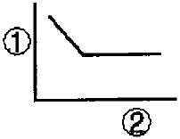
- ① 응력, ② 압축률
- ① 응력, ② 반복횟수
- ① 경도, ② 시간
- ① 충격치, ② 온도
(정답률: 85%)
72. 설퍼 프린트에 의한 황(S)의 분포상태를 분류한 것 중 해당되지 않는 편석은?
- 정편석
- 점상편석
- 형상편석
- 선상편석
(정답률: 80%)
73. 와류탐상검사의 특징을 설명한 것 중 틀린 것은?
- 도체에만 적용이 가능하다.
- 시험체에 비접촉으로 탐상이 가능하다.
- 고온 부위에 시험체에는 탐상이 불가능하고, 후처리가 필요하다.
- 시험체의 표층부에 있는 결함 검출을 대상으로 한다.
(정답률: 55%)
74. 산업재해의 원인 중 직접원인에 해당하는 것은?
- 기술적 원인
- 불안전한 상태
- 인간적 원인
- 관리적 원인
(정답률: 62%)
75. 현미경 조직검사 중 부식에 대한 설명으로 틀린 것은?
- 결정면보다 결정입계의 부식속도가 더 느리다.
- 저배율에서는 과부식이, 고배율에서는 약부식이 관찰에 용이하다.
- 부식 시간은 부식액의 농도, 온도, 종류에 따라 각각 다르게 적용한다.
- 부식은 유동한 표면층을 제거하여 하부 금속의 조직성분을 노출시키는 것이다.
(정답률: 64%)
76. 재료의 연성을 파악하기 위하여 구리 및 알루미늄판재를 가압 성형하여 변형 능력을 시험하는 시험법은?
- 샤르피 시험
- 에릭션 시험
- 암슬러 시험
- 크리프 시험
(정답률: 91%)
77. 스크래치(seratch)를 이용한 경도시험법은?
- 브리넬경도시험
- 로크웰경도시험
- 마르텐스경도시험
- 마이어경도시험
(정답률: 70%)
78. 로크웰경도시험에서 사용하는 시험하중이 아닌 것은?
- 600kgf
- 1000kgf
- 150kgf
- 200kgf
(정답률: 54%)
79. 다음 중 강성계수(G)와 틀림 강도를 측정할 수 있는 시험법은?
- Cupping test
- Fatigue test
- Creep test
- Torsio test
(정답률: 49%)
80. 다음 중 불꽃시험에 대한 설명으로 틀린 것은?
- 불꽃 유선의 길이는 약 0.5m 정도가 적당하다.
- 불꽃의 모양은 뿌리, 중앙, 끝으로 되어 있다.
- 탄소파열을 조자하는 원소는 W, Ni 등이 있다.
- 불꽃 유선의 길이, 유선의 색, 불꽃의 수를 보고 강종을 판별한다.
(정답률: 86%)